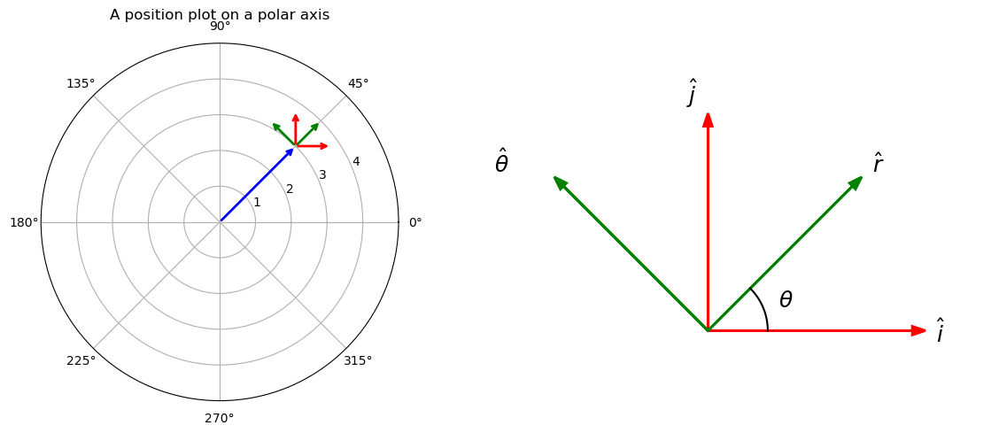

D3.1 Position, Velocity, and Acceleration in Polar Coordinates#
D3.1.1 Motivation: Why Polar Coordinates?#
When we first encounter kinematics, motion is almost always described in Cartesian coordinates: position along \(x\), \(y\), and sometimes \(z\) axes. This is natural, since many problems in introductory physics involve objects moving along straight lines or simple paths where Cartesian coordinates provide the most direct description.
However, as soon as we begin to study motion that involves curvature—such as:
circular motion
orbital motion (planets, satellites)
motion under central forces
particles constrained to curved paths
the Cartesian system becomes cumbersome. In these situations:
the motion is not aligned with the coordinate axes
constraints are often expressed in terms of distance from a point or angles
As a result, describing motion using \((x,y)\) requires continuously recombining components to recover the actual physical behavior.
In these cases, it is more natural to describe motion relative to a central point using polar coordinates
where:
\(r\) represents the distance from the origin
\(\theta\) represents the angular position
This coordinate system aligns directly with the geometry of curved motion.
The power of polar coordinates lies in how they separate motion into two intuitive parts:
radial motion → movement inward or outward
transverse (angular) motion → rotation about the origin
Instead of tracking \(x\) and \(y\) separately, we describe motion through how \(r(t)\) and \(\theta(t)\) evolve.
This makes it straightforward to separate the kinematics into two intuitive parts: radial motion (inward or outward) and transverse motion (rotation around the origin). The resulting velocity and acceleration expressions reveal new terms, such as the centripetal and Coriolis, like contributions—that emerge naturally from the mathematics, and which are indispensable in understanding rotational and orbital systems.
In short, polar coordinates provide a language that matches the symmetry of rotational and orbital motion. They:
simplify the mathematical description of curved trajectories
reveal the physical structure of motion
prepare us to analyze systems governed by central forces
By mastering kinematics in polar coordinates, we gain tools that will be essential for understanding:
orbital motion
angular momentum
effective potentials
and later, Lagrangian mechanics
D3.1.2 Setup: What Changes from Cartesian Coordinates?#
In Cartesian coordinates:
unit vectors \(\hat{\mathbf{x}}, \hat{\mathbf{y}}\) are constant
only the coordinates change with time
In polar coordinates:
the coordinates \(r(t)\) and \(\theta(t)\) change
the unit vectors also change with time
This is the key difference that leads to new terms in velocity and acceleration.
Definition — Polar Unit Vectors
\(\hat{\mathbf{r}}\) points radially outward
\(\hat{\boldsymbol{\theta}}\) points perpendicular to \(\hat{\mathbf{r}}\), in the direction of increasing \(\theta\)
These unit vectors rotate as the particle moves.
The figure below shows the relationship between the cartesian and polar unit vectors. We will use this to derive the velocity and acceleration in polar coordinates.

The blue vector represents a position vector \(\vec{r}\). The two red vectors are the cartesian unit vectors \(\hat{i}\) and \(\hat{j}\), while the green vectors are the polar unit vectors \(\hat{r}\) and \(\hat{\theta}\). In contrast to the cartesian unit vectors, the polar unit vectors are changing directions depending on the position vector. The radial unit vector \(\hat{r}\) is always pointing in the radial direction away from the origin, and the angular unit vector \(\hat{\theta}\) is always pointing in the counterclockwise angular direction.
The position vector is fully characterized by
Definition — Polar Position Vector
This appears simpler than the cartesian version: $\vec{r} = x\hat{i} + y\hat{j}$, but do not be fooled. Whereas the cartesian unit vectors are constant, the $\hat{r}$ unit vector is a function of $\theta$ and makes it a lot more complex as we will see.
From the sketch on the right, we can write the polar unit vectors in terms of the cartesian unit vectors:
In the following, we will need to know the time derivative of the polar unit vectors:
Time Derivative of \(\hat{r}\)#
We will be using the dot notation for time derivatives.
Applying the sum, product, and chain rules on Equation(2):
Since the cartesian unit vectors are constants, their time-derivative is zero:
Pulling out the common factor of \(\dot{\theta}\):
The term in the parenthesis is the same as \(\hat{\theta}\):
Box Activity 1 — Time Derivative of $\hat{\boldsymbol{\theta}}$
In this activity, you will derive the time derivative of the polar unit vector \(\hat{\boldsymbol{\theta}}\) using its Cartesian representation.
Task#
Start from
Use calculus and the properties of Cartesian unit vectors to determine \(\dot{\hat{\boldsymbol{\theta}}}\).
Solution
Step 1 — Differentiate
Apply the product rule:
Step 2 — Use constant Cartesian unit vectors
So
Step 3 — Factor out \(\dot{\theta}\)
Step 4 — Recognize \(\hat{\mathbf{r}}\)
Thus
Final Result
Interpretation
\(\hat{\boldsymbol{\theta}}\) rotates toward \(-\hat{\mathbf{r}}\)
The rate of change is proportional to the angular speed \(\dot{\theta}\)
We are now ready to explore velocity and acceleration in polar coordinates.
D3.1.3 Velocity Vector in Polar Coordinates#
We take the time-derivate of the position vector in Equation (1):
Insert Equation (4):
Derived — Polar Velocity Vector
Discussion#
Radial Term#
The radial term is the one associated with \(\hat{r}\):
This tells us that the radial velocity is the rate of change of the distance away from the origin. This is simply a straight line velocity as on object moves towards/away the origin in a straight line.
Transverse Term#
The transverse term is the one associated with \(\hat{\theta}\):
We may recognise \(\dot\theta\) is the angular speed \(\omega\) and we can rewrite
with a magnitude of
What a hoot: this is what we called the tangential speed in the University Physics.
Circular Motion#
If we have circular motion, the radial component is zero and we are left with only the transverse velocity:
Example — Velocity in Polar Coordinates
Problem
Solution
Box Activity — Interpreting Velocity
A particle has velocity
What is the radial speed?
What is the tangential speed?
What is the direction of motion?
Solution
The velocity is already expressed in polar components:
Radial speed
→ The particle is moving outward.
Tangential speed
→ The particle is moving around the origin.
Direction of motion
The velocity has both:
outward motion (radial)
rotational motion (tangential)
Since both components are positive:
motion is away from the origin
motion is in the direction of increasing \(\theta\)